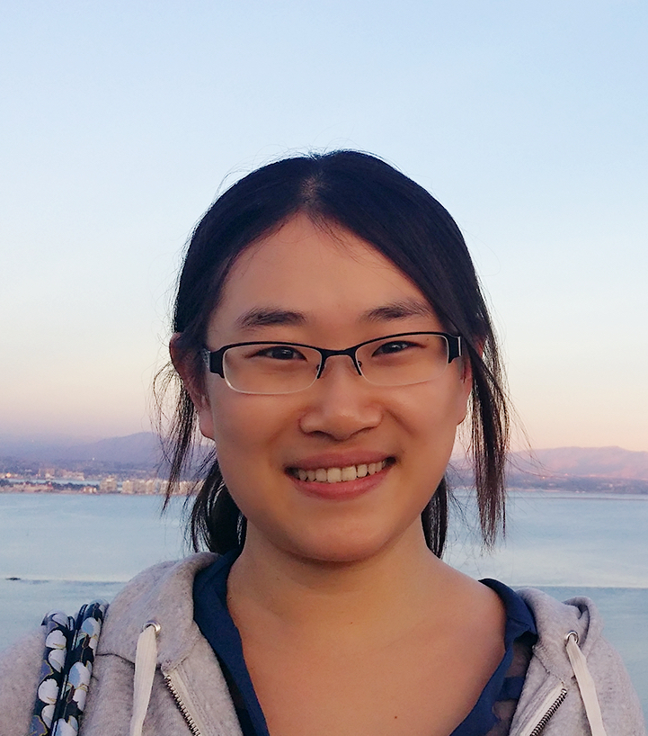

Email: shs037 at eng dot ucsd dot edu
I got my PhD from UC San Diego in Machine Learning and Differential Privacy under the supervision of Prof. Kamalika Chaudhuri. Before joining UCSD, I obtained my BSc degree in Mathematics and Computer Science from The Hong Kong University of Science and Technology.
I work at Google Brain.
Characterizing Private Clipped Gradient Descent on Convex Generalized Linear Problems [pdf]
Shuang Song, Om Thakkar, and Abhradeep Thakurta
Tempered sigmoid activations for deep learning with differential privacy [pdf]
Nicolas Papernot, Abhradeep Thakurta, Shuang Song, Steve Chien, and Úlfar Erlingsson
AAAI Conference on Artificial Intelligence, 2021
The Flajolet-Martin Sketch Itself Preserves Differential Privacy: Private Counting with Minimal Space [pdf] [code]
Adam Smith, Shuang Song, and Abhradeep Thakurta
Neural Information Processing Systems (NeurIPS), 2020
Encode, Shuffle, Analyze Privacy Revisited: Formalizations and Empirical Evaluation [pdf]
Úlfar Erlingsson, Vitaly Feldman, Ilya Mironov, Ananth Raghunathan, Shuang Song, Kunal Talwar, and Abhradeep Thakurta
Combining MixMatch and Active Learning for Better Accuracy with Fewer Labels [pdf] [code]
Shuang Song, David Berthelot, and Afshin Rostamizadeh
That which we call private [pdf]
Úlfar Erlingsson, Ilya Mironov, Ananth Raghunathan, and Shuang Song
Scalable Private Learning with PATE [pdf]
Nicolas Papernot, Shuang Song, Ilya Mironov, Ananth Raghunathan, Kunal Talwar, and Úlfar Erlingsson
International Conference on Learning Representations (ICLR), 2018
Rényi Differential Privacy Mechanisms for Posterior Sampling [pdf]
Joseph Geumlek, Shuang Song, and Kamalika Chaudhuri
Neural Information Processing Systems (NIPS), 2017
Composition Properties of Inferential Privacy for Time-Series Data [pdf]
Shuang Song, and Kamalika Chaudhuri
Allerton Conference on Communication, Control and Computing, 2017
Pufferfish Privacy Mechanisms for Correlated Data [pdf]
Shuang Song, Yizhen Wang, and Kamalika Chaudhuri
ACM SIGMOD International Conference on Management of Data (SIGMOD), 2017
Learning from Data with Heterogenous Noise using SGD [pdf]
Shuang Song, Kamalika Chaudhuri, and Anand D. Sarwate
International Conference on Artificial Intelligence and Statistics (AISTATS) 2015
The Large Margin Mechanism for Differentially Private Maximization [pdf]
Kamalika Chaudhuri, Daniel Hsu, and Shuang Song
Neural Information Processing Systems (NIPS) 2014
Stochastic Gradient Descent with Differentially Private Updates [pdf]
Shuang Song, Kamalika Chaudhuri, and Anand Sarwate
GlobalSIP Conference, 2013